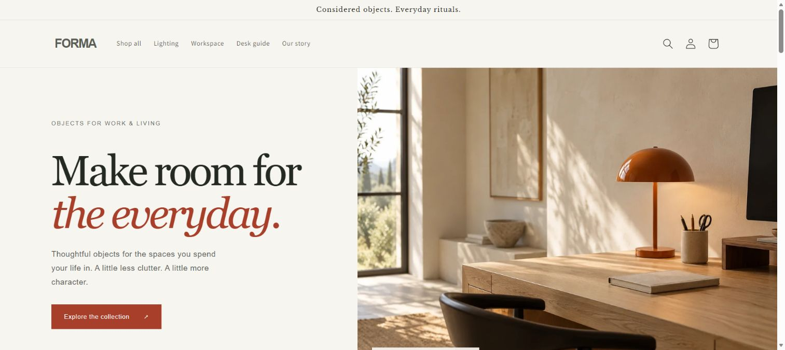
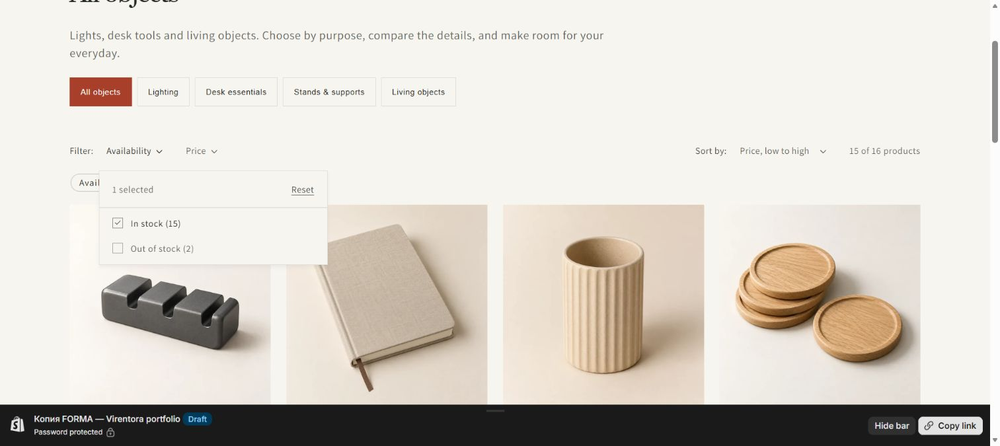
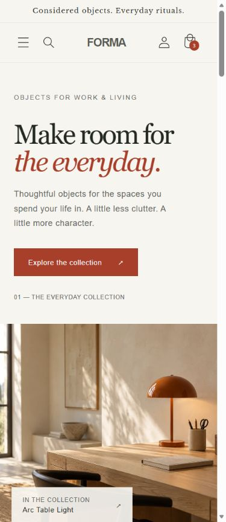
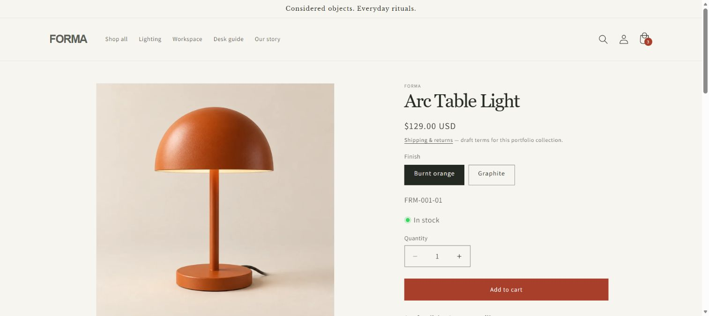
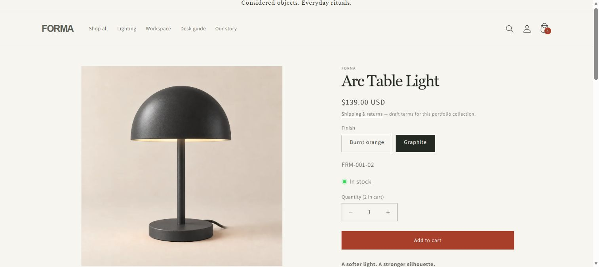
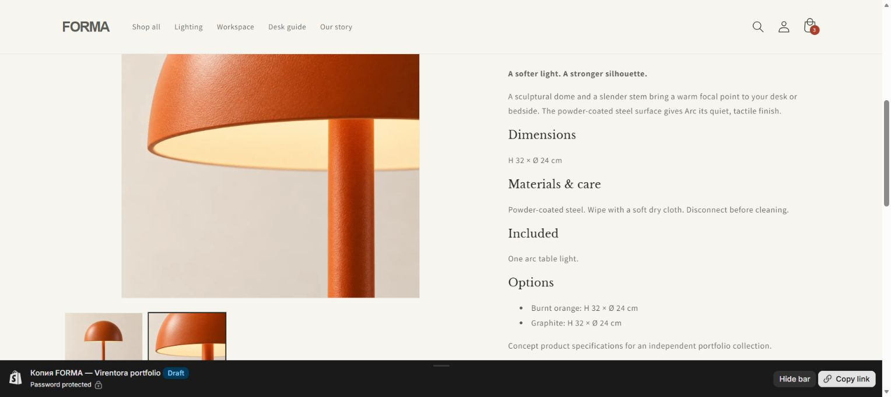
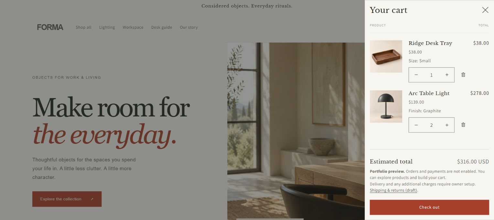
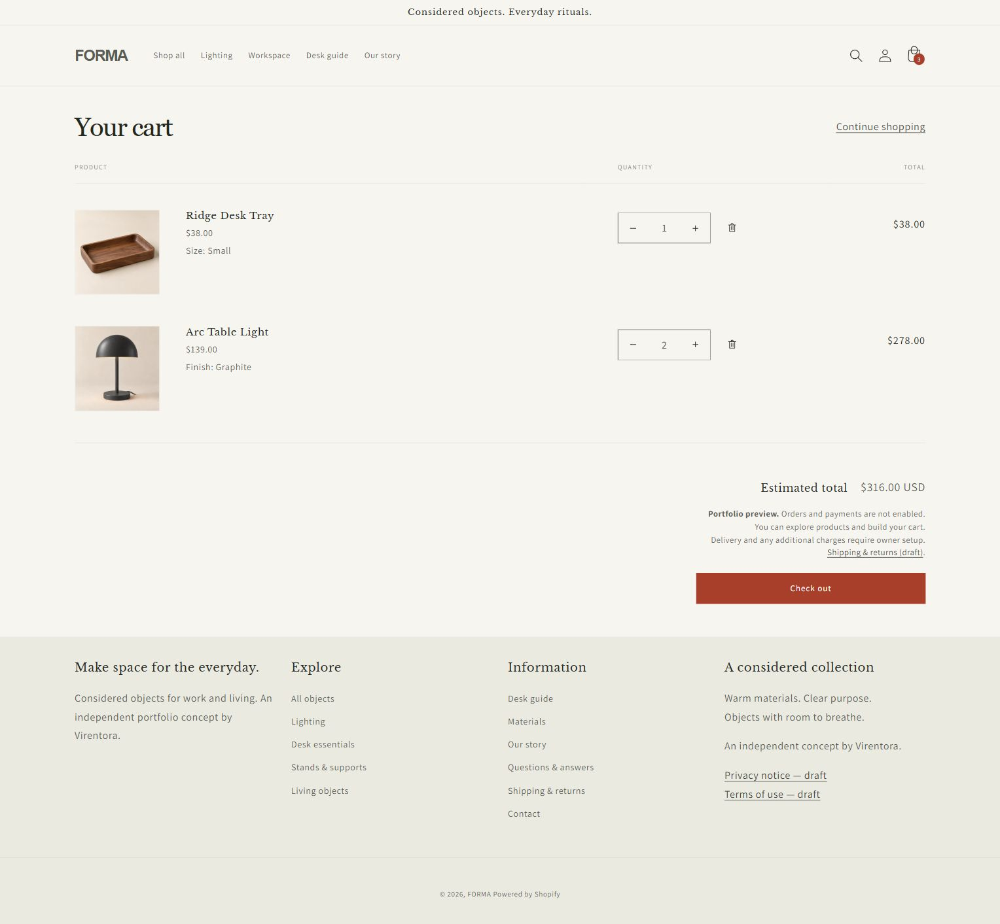
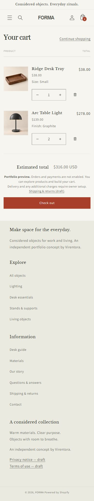

Структура ассортимента
Четыре категории: свет, предметы для стола, подставки и аксессуары для дома. Коллекции собираются по тегам.
Интернет-магазин · Shopify
Продуманный каталог, выбор вариантов и нативная корзина Shopify. Самостоятельный проект, в котором я собрал дизайн, содержание и покупательский путь в единую витрину.
Самостоятельный портфолио-проект

Главная страница FORMA в Shopify
Задача — собрать магазин, в котором посетитель понимает ассортимент, сравнивает предметы и выбирает подходящий вариант. Я начал со структуры каталога, содержания карточек и последовательности действий.
Визуальная система FORMA объединяет тёплый светлый фон, графитовый текст и терракотовый акцент. В Shopify я оформил витрину на базе Dawn 16, добавил девять собственных секций и сохранил нативную логику каталога и корзины.
Четыре категории: свет, предметы для стола, подставки и аксессуары для дома. Коллекции собираются по тегам.
Изображение, цена, артикул и наличие относятся к выбранному варианту товара.
Основные блоки главной, страницы и каталог доступны владельцу в штатных редакторах.
Знакомит с предметами и предлагает начать с категории.
Фильтр наличия, сортировка и поиск помогают сузить выбор.
Фотографии, размеры, материалы и комплектация помогают сравнить предметы.
Выбранная отделка меняет изображение, цену и данные наличия.
Сохраняет варианты и пересчитывает сумму после изменения количества.
Перед переходом видна пометка: приём заказов и оплата пока не включены.

Каталог с фильтром наличия и сортировкой

Главная на телефоне
У Arc Table Light отделка Burnt orange стоит $129, Graphite — $139. Это цены разных вариантов, а не скидка. При переключении меняются основной кадр, цена и артикул; наличие проверяется для каждой отделки отдельно.

Arc Table Light в Burnt orange за $129

Arc Table Light в Graphite за $139
Недоступный Ridge Large нельзя добавить в корзину; Fold показывает отсутствие наличия. Детальные фотографии стандартной отделки доступны только с ней: у альтернативной отделки есть свой основной предметный кадр.

Деталь в галерее товара
Использована нативная корзина Shopify: выдвижная панель и отдельная страница. Она хранит выбранные варианты, меняет количество, удаляет позиции и пересчитывает итог.
Проверенный сценарий · USD
Удаление Ridge возвращает $278. Изменение его количества проверено по цепочке $316 → $354 → $316. Это проверка расчёта, не выручка магазина.

Две позиции и итог $316 в нативной корзине

Полная корзина с выбранными вариантами

Полная корзина на телефоне
Перед Check out в обоих вариантах корзины сохранено пояснение: можно изучить товары и собрать корзину, но заказы и платежи не включены. Уведомление остаётся после обновления количества.
Названия, описания, цены USD, артикулы, остатки, фотографии, alt и SEO — через Products.
Товары попадают в четыре автоматические коллекции по тегам. Состав меняется вместе с ассортиментом.
Основные секции, тексты, изображения и подборки настраиваются в редакторе темы.
Содержание информационных страниц и навигация доступны в Shopify. Подготовлена инструкция для последующей работы.
Проверка витрины проведена 2 октября 2026 года. Скриншоты показывают настоящий интерфейс Shopify.
Это проверка перечисленных сценариев, а не полный аудит доступности или измерение скорости.
FORMA — самостоятельный портфолио-проект Virentora. Витрина, каталог, варианты, поиск, фильтры и корзина работают в Shopify. Приём заказов и оплата пока не включены: полный checkout и тестовый заказ не завершены.
Товары, цены и остатки концептуальные; предметные изображения сгенерированы. Скриншоты интерфейса сняты с настоящего Shopify. Это не клиентское внедрение, продажи и коммерческие показатели не заявляются.
Магазин защищён паролем; тариф не выбран, платёжная настройка не завершена. Перед торговлей нужно отдельно настроить доставку и налоги, проверить юридические данные и пройти тестовый заказ. Доставка контактного сообщения не подтверждена; Shipping, Privacy и Terms остаются черновиками.
Гостевая ссылка ограничена по времени; заказ не оформляется.
Можно начать с структуры каталога, основных страниц и покупательского пути. Напишите, что продаёте и какие действия должен выполнять магазин — обсудим состав работы и дальнейшее управление.
Обсудить проект в Telegram